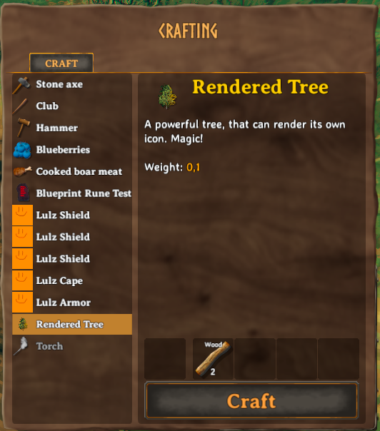

Render Manager
Jötunn's RenderManager allows you to pass a GameObject and let Jötunn render the visual parts into a Sprite for you.
Note: The code snippets are taken from our example mod.
Creating a Sprite as an icon for a cloned prefab
In this example, we will clone a tree seed and create an icon for it from a grown tree prefab. In order to do this, we will need to reference already instantiated game assets. One method of doing so is by using the "vanilla prefabs available" event provided by Jötunn. The event is fired when the vanilla items are in memory and thus clonable (more precisely in the start scene before the initial ObjectDB is cloned).
private void Awake()
{
// Add a cloned item with a runtime-rendered icon
PrefabManager.OnVanillaPrefabsAvailable += AddItemsWithRenderedIcons;
}
In our method we render an icon of the Beech1 with RenderManager.Render. Here we clone the vanilla BeechSeeds to a new CustomItem (see our tutorial on items for more information about cloning vanilla prefabs).
// Create rendered icons from prefabs
private void AddItemsWithRenderedIcons()
{
// use the vanilla beech tree prefab to render our icon from
GameObject beech = PrefabManager.Instance.GetPrefab("Beech1");
// rendered the icon
Sprite renderedIcon = RenderManager.Instance.Render(beech, RenderManager.IsometricRotation);
// create the custom item with the icon
ItemConfig treeItemConfig = new ItemConfig();
treeItemConfig.Name = "$rendered_tree";
treeItemConfig.Description = "$rendered_tree_desc";
treeItemConfig.Icon = renderedIcon;
treeItemConfig.AddRequirement(new RequirementConfig("Wood", 2, 0, true));
ItemManager.Instance.AddItem(new CustomItem("item_MyTree", "BeechSeeds", treeItemConfig));
// You want that to run only once, Jotunn has the item cached for the game session
PrefabManager.OnVanillaPrefabsAvailable -= AddItemsWithRenderedIcons;
}
Note that all texts are tokenized and translated ingame. The translations are also provided by Jötunn. Read the tutorial on Localizations for more information on that topic.
The resulting item with the rendered icon in game:

Caching Icons
Generating icons takes only a short amount of time (a few milliseconds) but when you have a lot of items, it can add up. To prevent rendering the images every time, they can be cached and reused at the next game start.
The simplest way to use caching is to enable the UseCache property of the RenderRequest.
The generated sprites will be written to an image file and loaded from the file system instead of being re-rendered again.
The GameObject name will be used to determine the file name.
private void RenderIcons() {
GameObject beech = PrefabManager.Instance.GetPrefab("Beech1");
RenderManager.RenderRequest request = new RenderManager.RenderRequest(beech);
request.Rotation = RenderManager.IsometricRotation;
request.UseCache = true;
Sprite icon = RenderManager.Instance.Render(request);
}
This assumes that the GameObject is vanilla and thus generates a new icon when the vanilla version changes. To have finer control over this, you can provide your mod metadata so it will generate a new icon when your mod version changes.
Note that this has to be executed inside your mod's BaseUnityPlugin class, otherwise you will need a reference to your Info.Metadata.
private void RenderIcons() {
GameObject beech = PrefabManager.Instance.GetPrefab("Beech1");
RenderManager.RenderRequest request = new RenderManager.RenderRequest(beech);
request.Rotation = RenderManager.IsometricRotation;
request.UseCache = true;
request.TargetPlugin = Info.Metadata;
Sprite icon = RenderManager.Instance.Render(request);
}